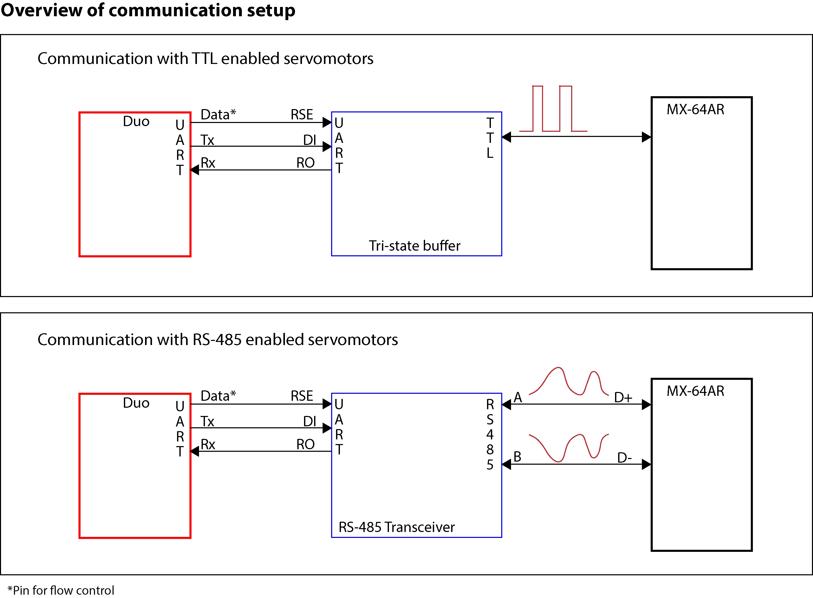

DuoDMXL
Libary for servo control with Duo (Redbear) or Photon (Particle)
For the source code visit github.com/FabReyesMecha/DuoDMXL.
DuoDMXL is a library for controlling Dynamixel servos using a Duo (or Photon) as main microcontroller. This library allows the user to write or read all of the possible registers in the servomotors. Specifically, it is meant for MX-64 servomotors. Other models like AX have different EEPROM registers, but the library can be adapted.
Initially, the library was based on Savage Electronics Library, but eventually started to diverge from the original. The original library used timers for several functions, which would lead to troubles using other microcontrollers, different than the Arduino UNO.
The main difference is that communication is delegated to the basic functions:
sendWord()which writes a value to a register of the servo.readWord()which reads the current value of a register of the servo.readInformation()which reads a response (set of bytes) from the servomotors. It could be requested information or a simple no-error response.
and all other functions call these basic functions with the appropiate parameters. This not only decreases the code size, but also allows for easier creation of user-defined functions.
The Dynamixel servos have their own protocol for communication, which you can check in the communication section of the ROBOTIS manual. Depending on the servos you are communicating with, you need to transform UART signal from the the Duo (or Photon) unto a half-duples TTL signal for some servos (e.g., MX-64T) which can be done with a tri-state buffer, or use a RS-485 transceiver for servos that use RS-485 bus (e.g., MX-64AR).
 Overview of communication. A more complete setup (including power lines) is included in the Hardware section.
The DuoDMXL repository includes eagle schematics and board layouts for two types of 'shields'. The Duo Tri-state Buffer Shield is used for half-duplex communication. It takes the TX and RX signal from the DUO (or Photon) and the signal of a control pin, and changes it into communication with only one line of data. The Duo RS-485 Shield is used to communicate with a RS-485 transceiver. It takes the TX and RX signal from the DUO (or Photon) and the signal of a control pin and outputs differential communication through the two signals D+ and D- (also called A and B). The library works equally with both hardware setups.
The pinout of the Duo can be seen in the following picture.
 Duo Pinout.
Duo Pinout.
In this picture a SMPS2Dynamixel board is used for adding external power (recommended for not frying your microcontroller board and for a more stable and uninterrupted performance). The RS-485 transceiver is powered up from the Duo. Since the Duo can be powered up from several sources (e.g., directly on the 3.3V pin, through the VIN pin with a Lipo battery, or through the micro USB connector) I chose to power up the transceiver from the 3.3V pin to always guarantee the same voltage, independently of the source. I used the ST4485 as RS-485 transceiver, but you can choose other if the pin mapping is the same (e.g., ISL32458E). Just be careful to choose a transceiver that uses 3.3V for power. Pin D15 is used for data flow control by default, buy you can choose other pin if you need to.
Prerequisites:
- Hardware:
- RS-485 transceiver or Tri-state buffer.
- Software dependencies:
- None (as of version 0.2.2)
Installation: This library is mainly intended to be used with the Arduino IDE. Just download the source code and install in .../documents/Arduino/libraries.
Sections
| Sections | Description |
|---|---|
| Home | Introduction to DuoDMXL |
| Source Code | Documentation of the DuoDMXL library. |
| Hardware | Documentation for the shields necessary to interface the DYNAMIXEL servos with the Duo (RedBear) ot Photon (Particle). |
| Examples & Tests | Examples of how to use the library DuoDMXL. Data from oscilloscope or logic analyzer are provided for some examples. |